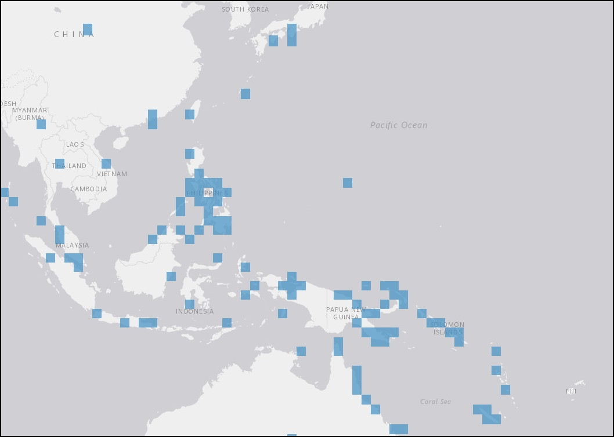

The Roman 2nd arrived at Guam on March 10, 1860. The dog conch's expansive habitat reaches this far-flung island.
The worked relief makes this artifact is a unique specimen among the collection of seashells at the New Bedford Whaling Museum.

More information on the taxa and distribution of Laevistrombus canarium is available through OBIS Mapper here.